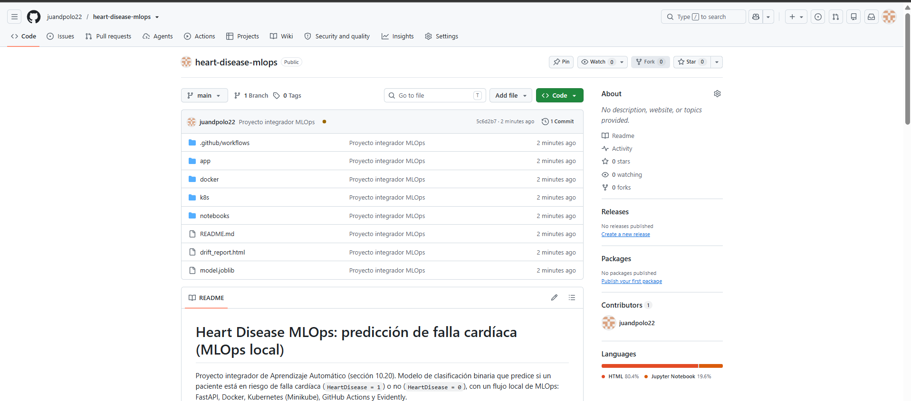
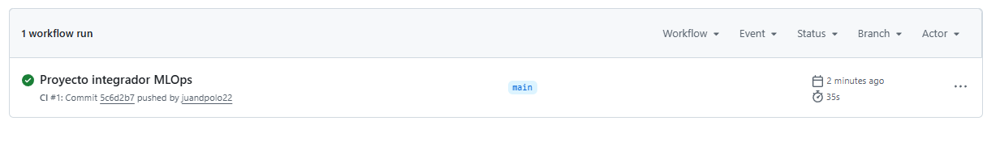
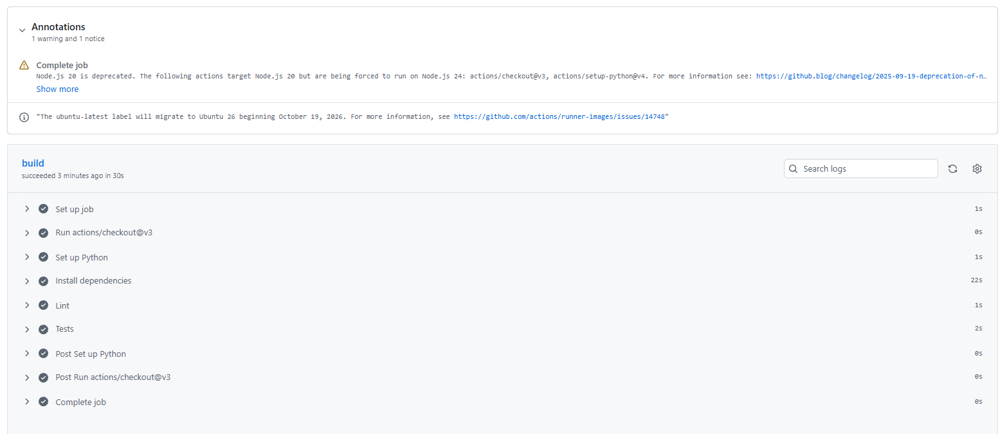

Etapa 5 · Integración continua con GitHub Actions#
Cada push al repositorio dispara un flujo de trabajo que instala las dependencias, revisa el estilo del código y comprueba que la API predice con el modelo cargado. Si algo falla, GitHub marca el commit en rojo y el error se detecta antes de desplegar.
Archivo de esta etapa en GitHub: .github/workflows/ci.yml. Las ejecuciones están en la pestaña Actions.
name: CI
on: [push]
jobs:
build:
runs-on: ubuntu-latest
steps:
- uses: actions/checkout@v3
- name: Set up Python
uses: actions/setup-python@v4
with:
python-version: '3.10'
- name: Install dependencies
run: |
pip install -r docker/requirements.txt
pip install flake8 pytest
- name: Lint
run: flake8 app/
- name: Tests
run: |
python - <<'PYEOF'
from app.api import Input, predict
alto = [58, "M", "ASY", 140, 289, 0, "Normal", 110, "Y", 2.0, "Flat"]
bajo = [35, "M", "ATA", 140, 289, 0, "Normal", 180, "N", 0.0, "Up"]
r_alto = predict(Input(features=alto))
r_bajo = predict(Input(features=bajo))
for r in (r_alto, r_bajo):
assert set(r) == {"heart_disease_probability", "prediction"}
assert 0.0 <= r["heart_disease_probability"] <= 1.0
assert r["prediction"] in (0, 1)
assert r_alto["prediction"] == 1 and r_bajo["prediction"] == 0
assert r_alto["heart_disease_probability"] > r_bajo["heart_disease_probability"]
print("Pruebas OK:", r_alto, r_bajo)
PYEOF
Qué hace cada paso#
Paso |
Qué hace |
|---|---|
Install dependencies |
Instala |
Lint |
|
Tests |
Importa |
El enunciado ejecuta pytest tests/. Como la estructura del proyecto no incluye una carpeta tests/, la misma verificación se hace con un script de Python dentro del propio flujo.
Evidencia#
El repositorio en GitHub con las carpetas del proyecto y el flujo de trabajo .github/workflows:


Figura 5 Repositorio juandpolo22/heart-disease-mlops con la estructura del enunciado.#
El primer push (commit 5c6d2b7) disparó la ejecución CI #1 en la rama main, que terminó con éxito en 35 segundos:


Figura 6 Ejecución CI #1 en verde en la pestaña Actions.#
El detalle muestra los pasos del trabajo build, todos en verde, incluidos Lint y Tests:


Figura 7 Pasos del trabajo build: instalación de dependencias (22 s), Lint (1 s) y Tests (2 s).#
Nota
Las anotaciones que se ven arriba del detalle son avisos informativos de GitHub, no fallos: una advertencia sobre la próxima retirada de Node.js 20 en las acciones actions/checkout@v3 y actions/setup-python@v4, y un aviso de que la etiqueta ubuntu-latest pasará a Ubuntu 26 el 19 de octubre de 2026.